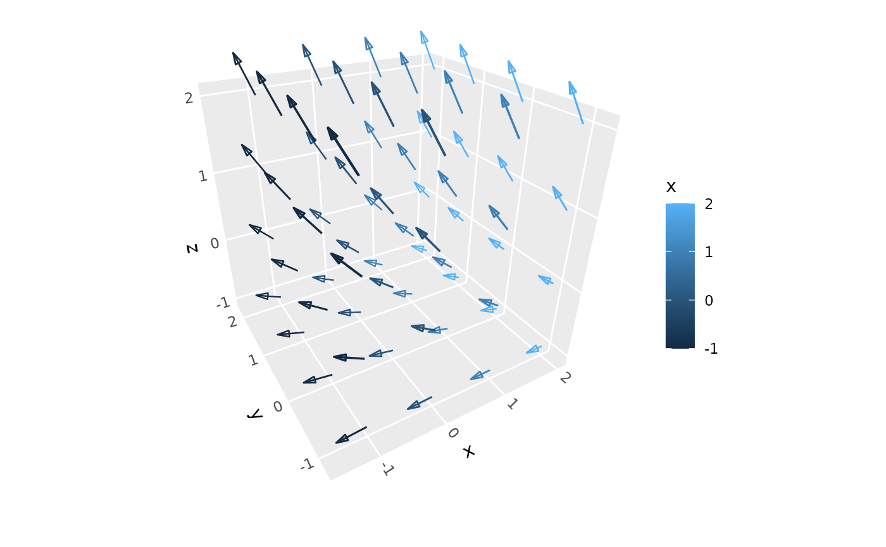
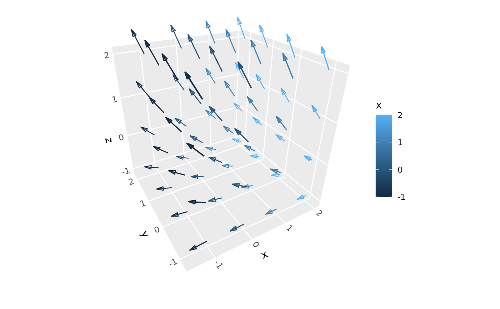

geom_segment_3d() and stat_segment_3d() drawe line segments in 3D space
with automatic depth-based linewidth scaling and proper depth sorting.
Each segment is defined by start coordinates (x, y, z) and end
coordinates (xend, yend, zend).
Usage
geom_segment_3d(
mapping = NULL,
data = NULL,
stat = StatSegment3D,
position = "identity",
...,
scale_depth = TRUE,
arrow = NULL,
lineend = "butt",
na.rm = FALSE,
show.legend = NA,
inherit.aes = TRUE
)
stat_segment_3d(
mapping = NULL,
data = NULL,
geom = GeomSegment3D,
position = "identity",
...,
scale_depth = TRUE,
arrow = NULL,
lineend = "butt",
na.rm = FALSE,
show.legend = NA,
inherit.aes = TRUE
)Arguments
- mapping
Set of aesthetic mappings created by
aes(). Requires x, y, z for start coordinates and xend, yend, zend for end coordinates.- data
The data to be displayed in this layer.
- stat
The statistical transformation to use on the data. Defaults to StatSegment3D.
- position
Position adjustment, defaults to "identity".
- ...
Other arguments passed on to
layer().- scale_depth
Logical indicating whether to apply depth-based scaling to linewidth. When
TRUE(default), segments closer to the viewer appear thicker, and segments farther away appear thinner.- arrow
Specification for arrow heads, created by
arrow().- lineend
Line end style, one of "round", "butt", "square".
- na.rm
If
FALSE, missing values are removed with a warning.- show.legend
Logical indicating whether this layer should be included in legends.
- inherit.aes
If
FALSE, overrides the default aesthetics.- geom
The geometric object used to display the data. Defaults to GeomSegment3D.
Aesthetics
geom_segment_3d() understands the following aesthetics:
x, y, z: Start coordinates (required)
xend, yend, zend: End coordinates (required)
colour: Line colorlinewidth: Line width (gets depth-scaled whenscale_depth = TRUE)linetype: Line typealpha: Transparency
See also
geom_path_3d() for connected paths, geom_segment() for 2D segments,
coord_3d() for 3D coordinate systems.
Examples
# Basic 3D segments
ggplot(sphere_points,
aes(x, y, z, xend = 0, yend = 0, zend = 0)) +
geom_segment_3d() +
coord_3d()
 # 3D vector field
data <- expand.grid(x = -1:2, y = -1:2, z = -1:2)
data2 <- data + seq(-.5, .5, length.out = length(as.matrix(data)))
data <- cbind(data, setNames(data2, c("x2", "y2", "z2")))
ggplot(data, aes(x, y, z,
xend = x2, yend = y2, zend = z2, color = x)) +
geom_segment_3d(arrow = arrow(length = unit(0.1, "inches"),
type = "closed", angle = 15),
linewidth = .5) +
coord_3d()

# 3D vector field
data <- expand.grid(x = -1:2, y = -1:2, z = -1:2)
data2 <- data + seq(-.5, .5, length.out = length(as.matrix(data)))
data <- cbind(data, setNames(data2, c("x2", "y2", "z2")))
ggplot(data, aes(x, y, z,
xend = x2, yend = y2, zend = z2, color = x)) +
geom_segment_3d(arrow = arrow(length = unit(0.1, "inches"),
type = "closed", angle = 15),
linewidth = .5) +
coord_3d()
